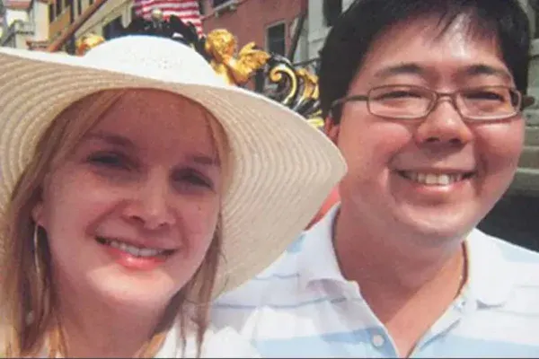

Elize Araújo Kitano Matsunaga (hoje Elize Araújo Giacomini)
Em 19 de maio de 2012, no apartamento do casal na Vila Leopoldina (SP), após uma discussão motivada pela descoberta de uma traição, Elize deu um tiro na cabeça do marido, o empresário e CEO da Yoki Marcos Kitano Matsunaga. Em seguida, esquartejou o corpo em seis partes, colocou-o em sacos plásticos dentro de três malas e o descartou em uma área de mata em Cotia (SP).
A polícia utilizou imagens de câmeras de segurança do prédio que flagraram Elize saindo com as malas. Ela foi presa em 4 de junho de 2012 e confessou o crime dois dias depois, em 6 de junho. A defesa alegou legítima defesa e que a ré sofria ameaças, enquanto a acusação apontou premeditação e o uso de uma das 34 armas que estavam na residência.
Condenada inicialmente em 5 de dezembro de 2016 a 19 anos, 11 meses e 1 dia de reclusão por homicídio qualificado e ocultação de cadáver. Em 2019, o STJ reduziu a pena para 16 anos e 3 meses, reconhecendo a atenuante de confissão. Cumpriu 10 anos em regime fechado no Complexo de Tremembé e, desde maio de 2022, encontra-se em liberdade condicional.